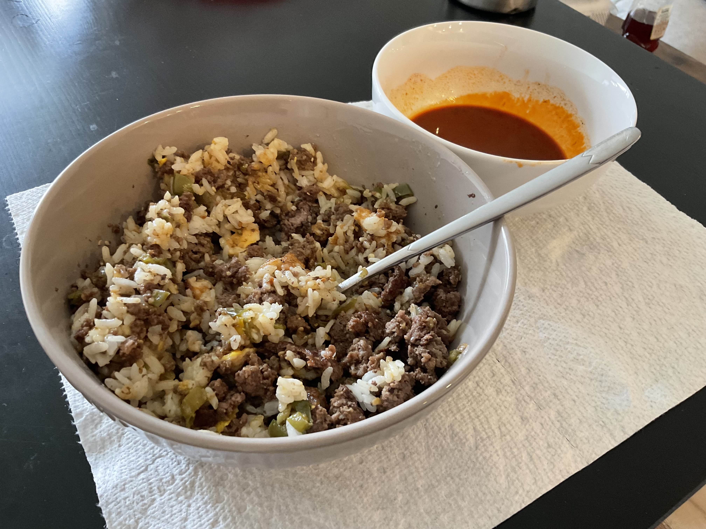

Home
Beef Pepper & Egg over Rice

Ignore the soup in the back.
Beef pepper saute with 2-3 eggs over rice.
Around 80g of protein per meal.
Ingredients
- Ground beef
- Serrano peppers
- Minced garlic
- Soy sauce
- Korean cooking wine
- Tuna fish sauce
- Eggs
- Rice
Steps
- Mince serrano peppers into small pieces
- Start cooking ground beef on medium heat and break up meat
- Add serrano peppers and garlic until it begins to brown
- Add soy sauce, cooking wine, and tuna fish sauce
- Saute till thoroughly cooked
- Serve on top of cooked rice
- Fry 2-3 eggs, serve on top, and enjoy